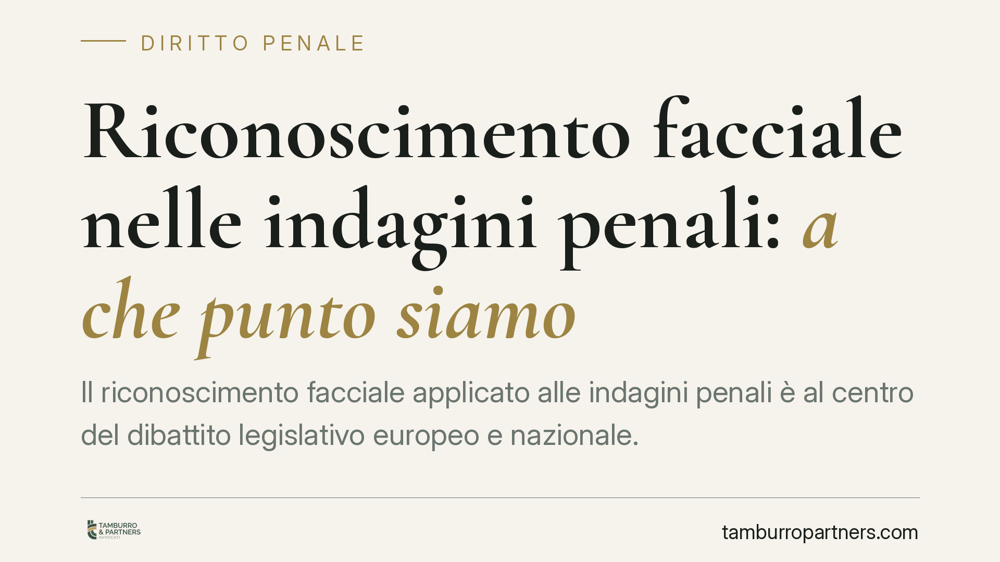

Riconoscimento facciale nelle indagini penali: a che punto siamo
Il riconoscimento facciale applicato alle indagini penali è al centro del dibattito legislativo europeo e nazionale. Non esiste ancora, nell'ordinamento italiano, una disciplina organica e vigente che ne autorizzi l'uso in tempo reale come mezzo di ricerca della prova. Ricostruiamo lo stato reale del quadro normativo e le implicazioni difensive, distinguendo ciò che è già diritto positivo da ciò che è ancora proposta.

Premessa: distinguere il diritto vigente dalle proposte
Circolano notizie su un imminente ingresso del riconoscimento facciale nel codice di procedura penale, talvolta con riferimenti a decreti e articoli presentati come già in vigore. Invitiamo alla prudenza.
Allo stato, nell'ordinamento italiano non risulta vigente una norma organica che disciplini l'identificazione biometrica remota in tempo reale come autonomo mezzo di ricerca della prova. Riferimenti a un presunto "art. 359-ter c.p.p." con questo contenuto, o a un decreto legislativo del 2026 già efficace, non trovano riscontro verificabile nelle fonti ufficiali. Ove esistano, si tratta di iniziative allo stato di proposta o schema, la cui numerazione, contenuto e tempistica restano soggetti a evoluzione.
Su un tema così sensibile per le libertà fondamentali, ragionare su testi non ancora consolidati è metodologicamente scorretto. Ci limitiamo quindi al quadro effettivamente applicabile.
Inquadramento normativo attuale
Oggi l'uso di dati biometrici nelle indagini si colloca all'incrocio tra più fonti.
Sul piano interno, l'attività di identificazione della polizia giudiziaria trova base negli artt. 349 e seguenti c.p.p., mentre le forme più invasive di captazione (come le intercettazioni) sono soggette al regime rafforzato degli artt. 266 e seguenti c.p.p., con riserva di giurisdizione e catalogo tassativo dei reati. Il riconoscimento facciale in tempo reale, per la sua capacità di sorveglianza di massa, viene spesso accostato sul piano del rischio a questi strumenti: si tratta però di un'analogia argomentativa, non di un'equiparazione normativa già acquisita.
Sul piano europeo, il Regolamento (UE) 2024/1689 (AI Act) è la fonte decisiva. Il regolamento qualifica l'identificazione biometrica remota "in tempo reale" in spazi accessibili al pubblico a fini di attività di contrasto come pratica in linea di principio vietata, ammettendone l'uso solo in ipotesi eccezionali, tassative e sottoposte ad autorizzazione (ad esempio ricerca di vittime, minacce terroristiche, individuazione di autori di gravi reati specificamente indicati). Non si tratta, dunque, di una tecnologia semplicemente "ad alto rischio": il punto di partenza è il divieto, con eccezioni strette. Ogni futura norma nazionale dovrà muoversi entro questi vincoli.
Implicazioni pratiche per la difesa
Anche prescindendo da una disciplina interna dedicata, alcune conseguenze operative sono già leggibili.
Per chi assiste un indagato, il tema centrale è la tenuta della prova. Un'identificazione biometrica non è un dato neutro né infallibile: i sistemi presentano tassi di errore e falsi positivi variabili in funzione della qualità delle immagini, dell'illuminazione e della composizione dei dataset di addestramento. Un abbinamento fornito da un software non equivale a una prova di identità.
Se una futura normativa dovesse introdurre presupposti autorizzativi (gravità del reato, controllo giurisdizionale, limiti temporali e territoriali), la loro violazione inciderebbe direttamente sulla utilizzabilità del risultato. La regola è nota: prove acquisite fuori dai limiti di legge sono esposte a censura ai sensi dell'art. 191 c.p.p.
Per il cittadino, resta ferma la tutela dei dati personali e il diritto di conoscere se e come le proprie immagini siano state trattate.
Cosa fare in concreto
- Verificate la fonte normativa: prima di prendere posizione su un procedimento, accertate quale disciplina fosse effettivamente vigente al momento dell'atto investigativo.
- Contestate l'affidabilità tecnica: chiedete la documentazione sul sistema usato, sui margini di errore e sui parametri di soglia dell'abbinamento.
- Presidiate i presupposti: se e quando una norma introdurrà autorizzazioni giurisdizionali, verificatene puntualmente il rispetto (competenza, motivazione, limiti temporali).
- Valutate l'utilizzabilità: eccepite tempestivamente ogni acquisizione avvenuta fuori dai limiti legali, collegando il vizio alla prova che ne deriva.
- Monitorate l'evoluzione: la materia è in rapido mutamento tra fonti UE e interne; consigliamo di aggiornare la strategia difensiva a ogni sviluppo normativo consolidato.
Conclusione
Il riconoscimento facciale investigativo è un cantiere aperto, non un dato acquisito. La cornice europea impone cautele stringenti e ogni intervento nazionale andrà letto alla luce dell'AI Act. Consigliamo di trattare con diffidenza qualsiasi rappresentazione che presenti come già legge ciò che è ancora dibattito.
---
Contributo informativo a cura di Tamburro & Partners - Avv. Giuseppe Tamburro. Non costituisce parere legale.
Ogni condominio ha una storia a sé.
Se gestisci un'amministrazione e vuoi un confronto su una specifica questione condominiale, scrivi allo studio. Ti rispondiamo entro un giorno lavorativo.